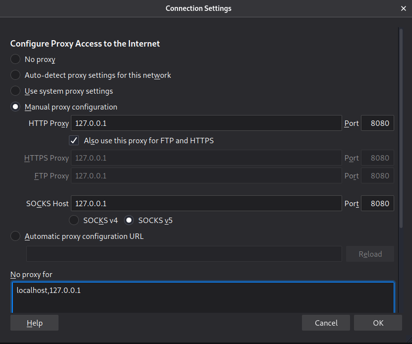
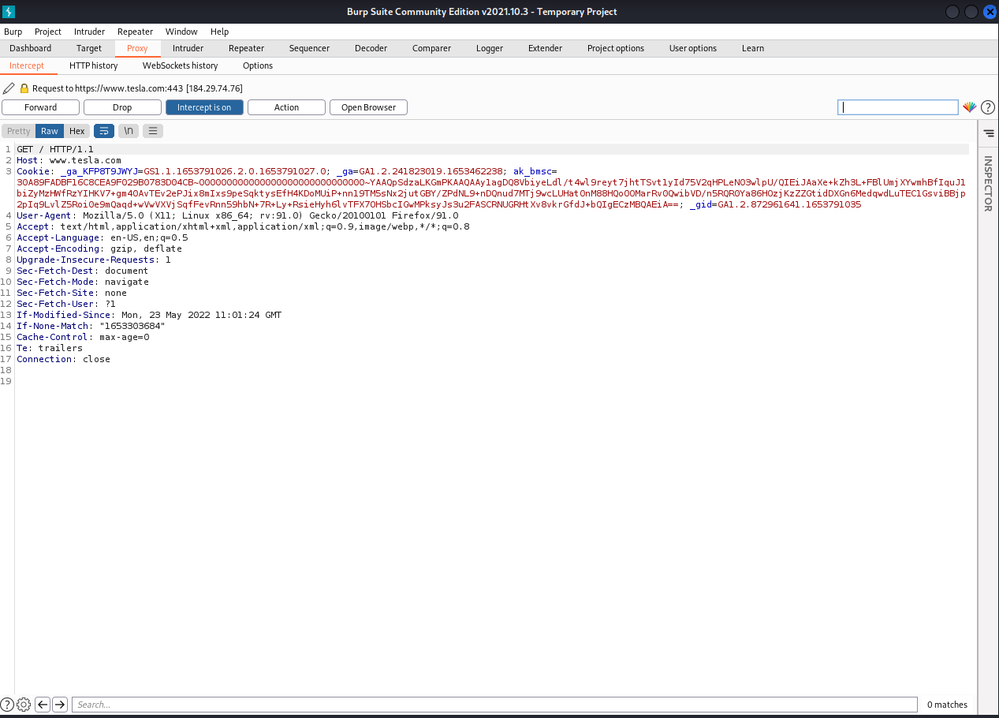

- Another tool for web application is Burp Suite.
- It is a web proxy which means it has the capability to intercept the traffic for us.
- Will setup the Firefox so will go into preferences and in that we have to go in Network settings in that we have to configure Manual Proxy settings.

- I have started BurpSuite and it works as given in the video (i.e. http://burp) and after that i was able to intercept the request.
But i am not able to see the PHP version in any of the tools i have used till now.
- So after setting the proxy we have to visit the website (i.e.https://burp) but in my case it didn't work. So i visited the website https://127.0.0.1:8080and
downloaded the certificate.
- After that we have to install the certificate in the privacy and security tab in that we have to surf through and go in the last section and click on the certificates section.
- Then we have to open the tesla website in the firefox and burp suite will show the website data in the proxy intercept tab and in the target section.

- These are the few tool's that we need to purchase.
- Later when we visit the web application section we will see a tool called foxy-proxybut this is a high level overview.
- Lastly will gather the information through the burp suite which will help us in the enumeration. And this is the still the passive attack and not the active as we are just
visiting the visite like a normal user.